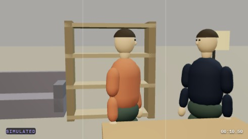
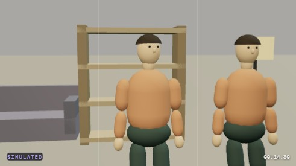
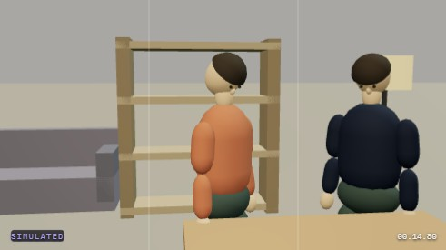
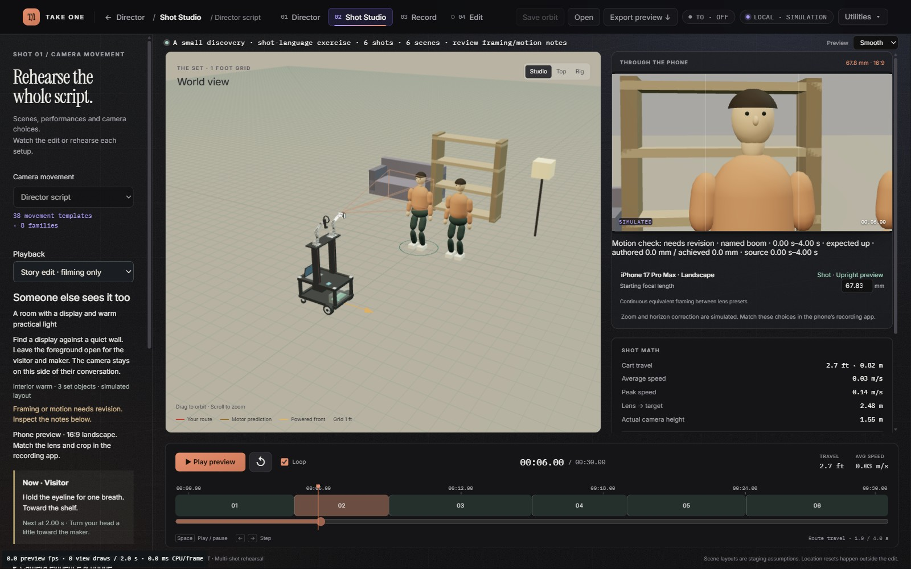
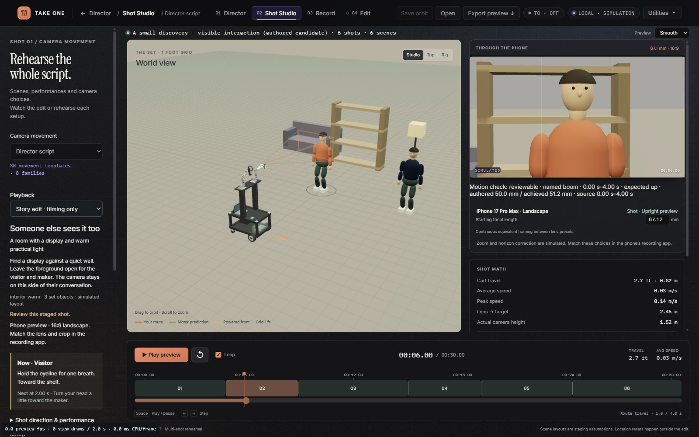

Saved interval: edit 9.050–14.834 s. VP9/WebM screen recording, no audio. The visible time overlay is the edit clock. Capture metadata.


The head geometry now agrees with the reported attention target, including combined yaw/pitch and transitions between targets. Coincident targets are marked unverified; angular limits use the actual angle between the requested and achieved head directions. Shared source takes cannot add or remove performer tracks between edit clips.
Provider requests now factor repeated template defaults into one shared record. Every resolved default and movement choice is preserved, with no higher token or spending limit. All four standard requests previously hit the 120,000-byte limit; their revised unsent requests are approximately 101,000 bytes and contain the current skill text. Curated authored examples also declare the current optional appearance/performance fields explicitly; they are not model generations.
96 targeted Python tests passed · 16 targeted JavaScript tests passed · Unsent request failures before compaction · Unsent request construction after compaction · Phone-view timestamps and references · Headful browser and GPU information
The final full run passed 832 product tests (one Windows symlink test skipped), 29 simulation tests, 263 JavaScript tests, syntax, integrity and lint. It exited 1 only on benchmark-script formatting. That whitespace-only change has an identical parsed Python AST; the follow-up lint and formatting checks passed. Runtime suites were not rerun after that formatting-only correction. Unmodified full-run summary · Formatting follow-up · Checkpoint result · Changed files and hashes.
Still limited: these are staging proxies. Eyes move with the head, not independently. Facial acting, measured individual anatomy, real focus/exposure, complete mesh-level visibility and physical tracking are not established. Reaching does not attach or transfer a prop. No training, paid inference, serial access or hardware trial was performed.
Original document digest:cae2b2f293d9b633615fd6b0ce9fcd02ea71fbbbb64075b2875dc72c31ccbcd8
Candidate document digest:99be3218d65587fb3c5efb77407ec6a814aae6d70e9e693ed526d97cc520572f
Open this candidate in the local review instance. This address is on the connected Windows computer.
A full 0–30 s simulated clip and stills from all six shots were captured. The final proxy hand reaches a fixed tool; no grasp or transfer occurs. The inspected saved revision still has a partial performer at the final frame edge and an inconsistent courtyard sound cue. Specific review · Actual simulated edit.